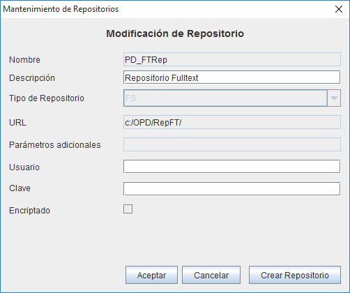

The Fulltext search allow to find document by its text besides it metadata or other criteria. This is possible by means of the Apache libraries Tika, that extract the text content from different file formats and Lucene, that analizes and index all the words of the text. The index are stored in a disk folder (for what it must be created an special repository) and are updated when documents are inserted, updated or deletd (for what it must be created some indexing tasks).
For using the fulltext searching a repository must be created (Repositories Maintenance) with the reserved name "PD_FTRep", of type filesystem (FS) and with an URL referencing a folder/fiilesystem that can be accesed by all the systems that index or search fulltext. (Ej."/prodoc/Ft_Index/"). No additional parameters are needed. It's important to note that the user(s) that do the indexing must have full permissions on the folder where the index are stored. Sometimes problems in indexing are solved assigning the permissions 7777 to the folder. If the installation uses only Web Client or Remote Conection, the J2EE server where the OpenProdoc application is installed must have read/wirte access to the Fulltext folders/filesystem.

Additionally, it must be created tasks linked to events (Tasks Event maintenance) for updating the fulltext index. It's necessary to create a task linked to of each kind of event (insert, Delete, Update) so each time a document is inserted, updated or deleted, a task for updating the Full Text indexes is created.
The easiest way, that will index all the documents in the complete repository, is to select as document type of the event the OpenProdoc base type "PD_DOCS" and as folder for filtering the root folder "/". That way the event will trigger for the documents of type PD_DOCS and all its subtypes (that is ALL types of documents) and the filter will for documents stored under folder root "/" and all its subfolders (that is ALL Folders in the repository).
If, by volumen or performance limitations, it's needed to limit the FT indexing to a set of document types, you can define a task the the document type common ancestor of all the document types selected o to define several packs of tasks (insert, update, delete), one for each document type to index. In a similar way, it's possible to filter the folders structure, so that the system index the structure "/Marketing" and all its subfolders and not the structure "/Private Information". As with the document types, you can select the common parent folder or to create several packs of 3 tasks (one for each folder).
The information to include in each task is:
The scheduled task will run depending on the defined frecuence and the list of pending task, so generally the documents will be not accesible fr full text search just after being inserted or updated..
You can search from the standard document search form (Search docs). The traditional search criteria by document types and metadata can be combined with full text expresions. The available operators are: